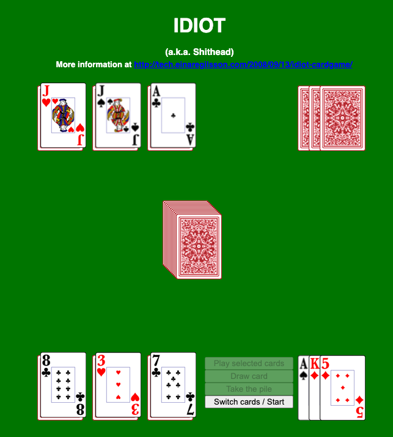

The story of CardGames.io
Posted: Last updated:My full time job for the last 7 years has been running a card game website. That is not something I ever planned on, it just sort of happened. From a hobby to a company with 4 employees. The Accidental Business Owner! And right now I'm procrastinating because I don't want to work on more card games, so I thought I'd write a blog post about how it happened.
I studied Computer Science at University and started working as a programmer when I graduated. I loved (and still do, on some days) programming! But the work I was doing, typical business programming in .NET wasn't really very interesting to me. I always ended up focusing too much on infrastructure, build servers, plugins for IDE's, all sorts of little technical projects that weren't directly related to the business domain I was working in. I always had side projects at home as well, little experiments, web pages and tools that I had fun making.
The first game
One night while watching TV I decided to program my favorite card game, Shithead (or Idiot as it's also known). I didn't find any good version of it online, so I started making one. I wasn't really familiar with any real game engines or stuff like that, and I wanted to be able to put it directly on the web where people could play it, so I just made it with simple HTML and JavaScript. The very first version is still available at https://einaregilsson.com/idiot/, and looks like this:
There's no animation, it's very ugly, but I had a lot of fun making it. Card games are kind of perfect little programming projects. There's enough rules and things to make it an interesting challenge, and there's the challenge of making an opponent who is at least halfway decent, but they're not too big, so you can usually make them in a few days. I've always loved small, self-contained project that I can obsess about for a few days and then just move on and forget about them!
Even though the game was simple and ugly it still got a few users, mostly because there was no other version online. And I had discovered that I really liked making card games as side projects. I made a couple of others, Hearts because I had always liked the built-in Hearts game that came with Windows, a simple Solitaire game, and then I just kept making more and more!
Monetization
I had heard about Google AdSense somewhere, and decided to try putting ad tags on the Idiot game. For months I would get maybe 1-2 dollars per month. But finally it added up to the payment threshold, which was around a 100 dollars, and I got paid for the first time! That felt incredibly weird, that I could actually get a little money for these side projects! But it was encouraging, so I kept making games. It had taken months to get that first check, but all of a sudden I was getting a check every month!
In 2012 the site really started making money, and by December 2012 the monthly revenue from CardGames.io was more than the salary I was making at my day job as a programmer. I didn't trust this new source of income at all though, so I kept working at my day job for 2 more years. Then in 2014 I quit my dayjob because I was moving back to Iceland, and then I decided to see if I could actually do CardGames.io fulltime!
Working on your hobby fulltime
I worked in a co-working space for a couple of years, programming more games and growing the site. In 2017 I hired two students to work part-time (2017 was also the year when Luke Skywalker started playing our game), in 2018 one of them quit and I hired two fulltime developers. That made it easier to add new games to the site, we now have around 40 games, not all of them card games, also some classic board and puzzle games. We also have an app for iOS and Android with all the games, it's basically just the website wrapped in a webview. .
One thing that happens though, when your hobby becomes your job, is you no longer have a hobby. Now when I get home from work the last thing I want to do
is more programming. Which is probably a good thing, I'm not sure programming at work and then going home to do more programming is good for a person. Now
I watch too much Netflix play piano and guitar at home instead of programming all the time.
Simplicity
Why did CardGames.io become popular? All the games on the site are available in many, many other versions online!
The computer players in many of the games are very naive. The graphics are really terrible not that great. But what it does have is simplicity!
Every game on the site is as simple as I could possibly make it. You arrive at the site, the game is ready, there's one button on the screen, it's a big
DEAL button, you click it and you've started playing! There are ads on the side, sure, but they don't interrupt you during the game. It
pretty much looks like games you could have played on Windows 3.1. And for a lot of people, especially older people, that's exactly what they want!
Something simple and easy to play.
Technology
The simplicity also extends to technology choices. For years there was no dynamic backend on CardGames.io, at all. Just static html files in an S3 bucket. I later added an API to track high scores in Solitaire games, and during Covid I ended up doing something I had sworn to never do, I added multiplayer functionality to most of the games. But the core single player games will always work as long as S3 doesn't go down.
I also try very hard to not know anything about my users at all. I don't use any 3rd party analytics. The site doesn't have user accounts. You can keep some stats, but they're only stored in your local browser. I don't want to know any names, email addresses, passwords etc. Data is a liability. Remember that saying from Spiderman's uncle: "With great power comes great responsibility". Well, I prefer the opposite: "With no power comes no responsibility". I don't want to have anyone's data, I don't want to owe anyone anything. Too extreme? Maybe, but it works for me 🙂
The future
What will the future hold for CardGames.io? I'm not sure! We already have 40 games, I'm not sure the site will get better by having 300 games on there. The two fulltime developers are working on a new app that's not related at all to the website, which will hopefully come out in a couple of months. And I've accepted that I will forever have to explain to people that ask me what I do that Yes, it is in fact possible to make a living from making card games for old people on the internet!